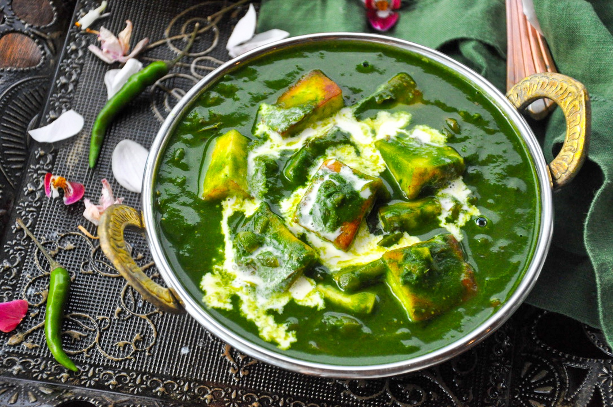

Palak Paneer

INGREDIENTS
- Paneer (Indian cottage cheese)
- Spinach (Palak)
- Oil
- Green Chilies
- Onions
- Tomatoes
- Ginger Garlic Paste
- Salt
- Cashew Nuts
- Garam Masala
- Cream
- Cumin seeds
- Cardamoms
- Cinnamon
- Cloves
INSTRUCTIONS
- Pluck only the young & spinach leaves and discard the stems as they may leave a bitter taste.If using baby spinach you use the stems as well.
- Add them to a large pot of water.Rinse them well few times & drain to a colander.
- Allow the water to drain completely otherwise it will let out lot of mositure while cooking.
- Heat half tablespoon oil in a pan. Saute green chilies cashew and spinach for 3 to 4 mins until the leaves wilt off thoroughly & raw smell of spinach has gone away.[Or another option is to blanch the palak in 4 cups of hot water with 1/4 tps salt for 2 mins.Then immerse in ice cold water
- Cool this completely.Blend this along with 11/4 cup water to a smooth puree.The puree should be smooth and thick. You may add 1 to 2 tbsps more water to help in blending